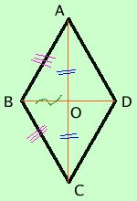

|
in ogni rombo le diagonali sono perpendicolari e viceversa se in un parallelogramma le diagonali sono perpendicolari allora il parallelogramma e' un rombo Dimostriamo il teorema diretto teorema diretto
Con il simbolo ⊥ ho indicato l'angolo retto. Nell'ipotesi e' compreso il fatto che sia un parallelogramma (con tutte le sue proprieta') ed abbia i quattro lati congruenti; non scrivo tutto perche' mi ci vuole mezza pagina  Dimostrazione considero i triangoli AOB e BOC; essi hanno:
Posso ripetere il ragionamento per i triangoli BOC e COD, poi posso anche ripeterlo per i triangoli COD e DOA e quindi per la proprieta' transitiva della congruenza otterremo la tesi. |